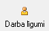
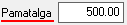

Darba līgumu žurnāls¶
<251>
Darba līgumu žurnālā tiek saglabāti visi slodzei pievienotie darba līgumi.
Lai atlasītu dokumentus, jāizmanto datu atlases filtrs. Dati uz ekrāna
tiek parādīti atbilstoši norādītajiem datu atlases kritērijiem filtra
ekrāna formā. Rīku joslā nopiežot pogu  (Ctrl+F), tiek atvērts filtra logs:
(Ctrl+F), tiek atvērts filtra logs:
{kind=link}
Datums: Filtrā iespēja atlasīt datus pēclīguma datuma no…līdz
Spēkā no: Filtrā iespēja atlasīt datus pēclīguma stāšanās spēkādatuma no…līdz
Lai Dokumentu žurnālā datus atlasītu pēc izvēlētajiem datu atlases
kritērijiem, pēc filtra iestādījumu aizpildīšanas, jānospiež poga
 .
.
Jauna Darba līgumapievienošana¶
Darba līgumu strādājošajam iespējams pievienot:
1. Strādājošā Slodzes aprakstā, nospiežot pogu  ;
{kind=link}
2. Atrodoties:doc:Darba līgumu žurnālā<251> un rīku joslānospiežot
pogu  ;
;
Lai aizpildītu Darba līgumu, jāizvēlas Strādājošais (slodze ), uz kuru attieksies darba līgums:
{kind=link}
Informācija pārējos Darba līguma dokumenta laukos - Struktrūvienība, Amats, Slodzes veids, Pers.kategorija - automātiski tiek ielādēta no slodzes aprakstā norādītās.
Laukā “Spēkā no”, nepieciešams ievadīt Darba līguma spēkā stāšanās datumu, kā arī norādīt līguma termiņu:
{kind=link}
Darba līgumā iespējams ievadīt arī noteiktu pamatalgu:  - lauks ir informatīvs un netiek saistīts ar Strādājošā Algu aprēķinu!
{kind=link}
Dati tiek saglabāti, nospiežot pogu  .
.
Pievienotie un saglabātie dati tiek saglabāti:doc:Darba līgumu žurnālā<251> .